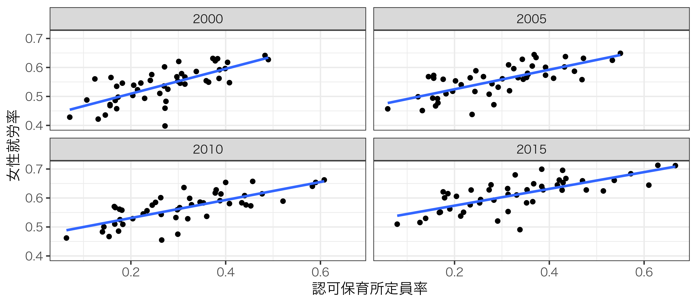
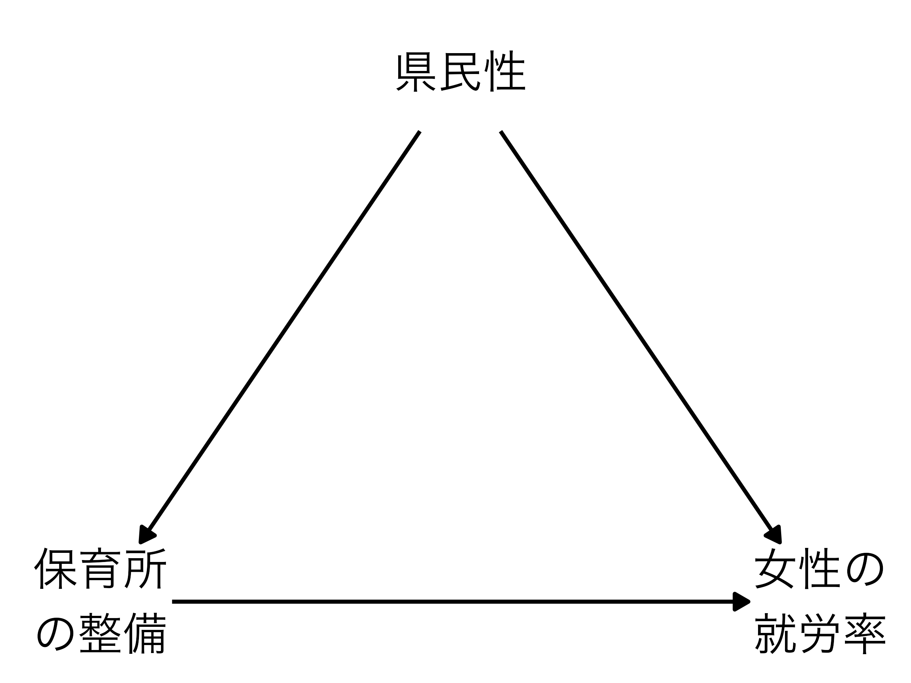
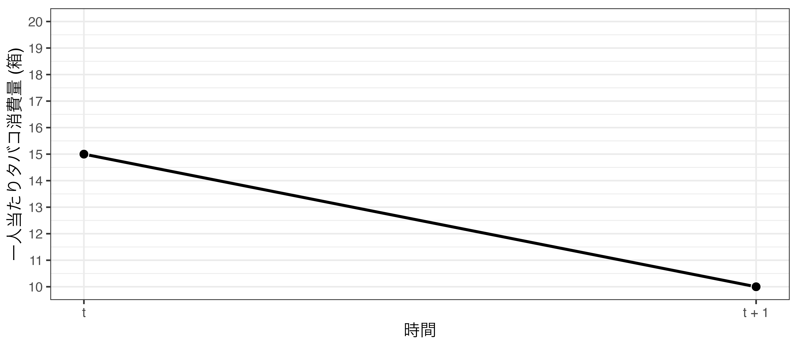
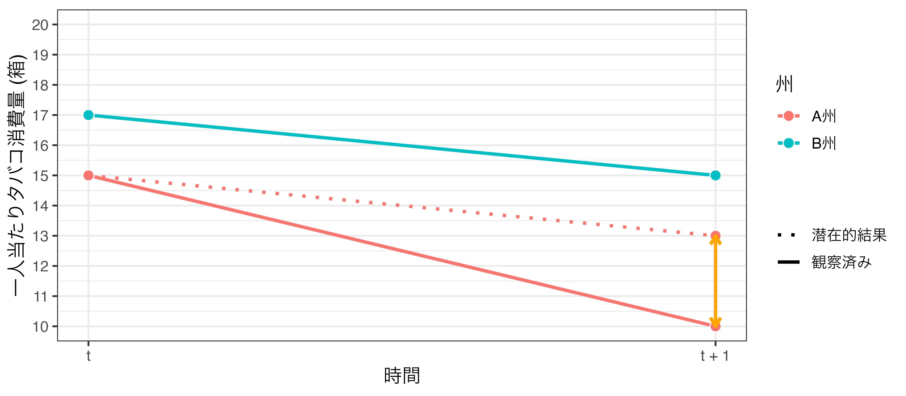
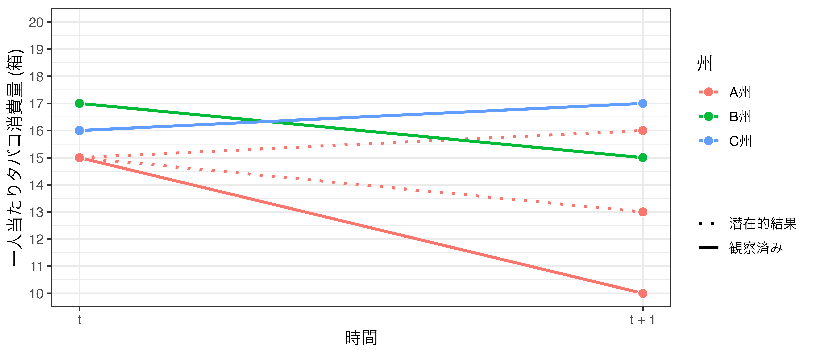
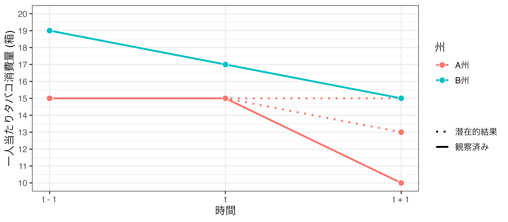
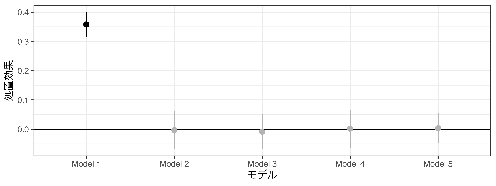
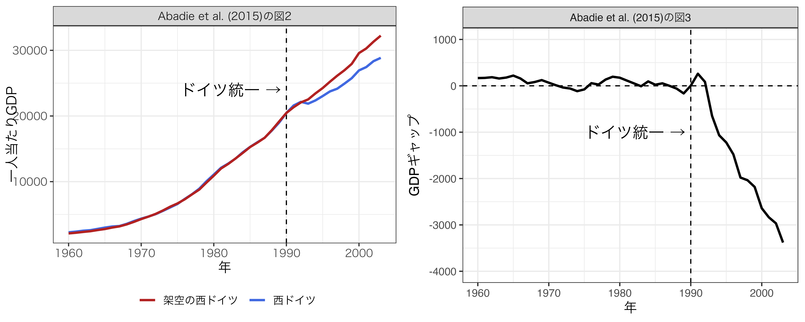

方法論特殊講義III
差分の差分法
宋 財泫
関西大学総合情報学部
2024-08-29
自然実験
マッチングの限界
条件付き独立の仮定 (Conditional Independent Assumption; CIA)
- 処置変数（\(T\)）と応答変数（\(Y\)）の間に存在する交絡要因（\(W\)）が全て観察されている場合
- \({Y_i (T_i = 1), Y_i (T_i = 0) \perp T_i | W_i}\)
- \(\rightarrow\) 交絡変数を共変量として統制する場合、観察データからも因果効果の推定が可能
- しかし、全ての交絡要因がデータに含まれる場合もほぼゼロ
- \(\rightarrow\) 仮定としては強すぎるため、（回帰分析を含む）マッチングによる厳密な因果推論は困難
- ただし、単純に処置変数と応答変数の単回帰分析よりは望ましい。
- より緩い仮定の下で可能な因果推論の手法
- \(\rightarrow\) 自然実験（Natural Experiment）
自然実験とは
RCTの3つの特徴（Freedman, Pisani, and Purves 2007）
- The response of experimental subjects assigned to receive a treatment is compared to the response of subjects assigned to a control group.
- The assignment of subjects to treatment and control groups is done at random, through a randomizing device such as a coin flip.
- The manipulation of the treatment—also known as the intervention—is under the control of an experimental researcher.
自然実験は（Dunning 2012）
- 同じ
- 処置の有無は無作為のように決まる（as-if random）。
- 処置内容などを研究者が操作することは不可能
- 2と3は自然、制度などによって影響を受ける。
自然実験の例
処置を受けるか否かが自然、制度、偶然などによって規定される
- 多数代表制と比例代表制
- 人口3500未満なら多数代表制、以上なら比例代表制を採用（フランス地方選挙）
- 軍の経験と所得
- ベトナム戦争時、徴兵対象がくじによって決まる（アメリカ）
- 最低賃金の効果
- 隣接するペンシルベニア州とニュージャージー州の最低賃金の格差
- 現職効果
- 惜敗・辛勝の場合、候補者間の質には大差ないはず
- 選挙区定数の効果
- 人口によって選挙区定数が決まる
- その他
自然実験の方法
本講義では1と2を解説
- 差分の差分法（Difference-in-Difference; Diff-in-Diff/DID/DD）
- 回帰不連続デザイン (Regression Discontinuity Design; RDD)
- 中断時系列デザイン（Interrupted Time-series Design; ITS）
- RDDの時系列版であるが、自己相関などの対処が必要であるため本講義では省略
- 中断時系列デザイン（Interrupted Time-series Design; ITS）
- 操作変数（Instrumental Variable; IV）
- 集積分析（Bunching Analysis）など
差分の差分法の考え方
保育所の整備と母の就労率（1）
横軸: \(\frac{\mbox{認可保育所定員}}{\mbox{5歳以下子供数}}\); 縦軸: 女性の就労率（元ネタ: Asai, Kambayashi, and Yamaguchi (2015) / データは宋が収集）
保育所の整備と母の就労率（2）
保育所が整備されると母は安心して働けるから就労率が上がる
- ロジックとして問題はなさそう
- 内生性は?
- (たとえば、)「県民性」の存在
- 母親の就業意識が高く、地域社会もこの意識に好意的なら …
- \(\rightarrow\) 就労率が上がる
- \(\rightarrow\) 政治・行政も支持拡大のために保育所整備に力を入れる

差分の差分法
Difference in Difference (Diff-in-Diff, DID, DD)
- 同一対象に対して複数の観測が前提
- 保育所の整備と母の就労率を47都道府県に対して4回 (2000, 2005, 2010, 2015年) 観察
- 「パネルデータ」
- 個々の有権者を対象にした場合、パネルデータの収集は高費用
- 日本の政治学だとJESが代表的
- 国、自治体、選挙区、団体は集計データが整備され、公表されているため利用しやすい
タバコの値段と消費量
元ネタはカルフォルニア州のProposition99
- \(t+1\)期において、A州のみタバコの値上げ
- \(t\)期におけるA州のタバコ消費量（箱/人）：15
- \(t+1\)期におけるA州のタバコ消費量（箱/人）：10
- \(\rightarrow\) 値上げ後、タバコの消費量が5箱\(\downarrow\)
- 実際の分析例は
- Breslow, M Johnson. 1993. “California’s Proposition 99 on Tobacco, and its Impact,” Annual Review of Public Health, 14: 585–604.
- 他にも Proposition 99 の因果効果に関する研究多数
- 以下は100%架空データ
タバコの値段と消費量
タバコ消費量の変化

タバコの値段と消費量
値上げ後、タバコの消費量が5箱減少
- 「5箱減」は値上げによる効果か
- たまたま全国的な禁煙ブームと重なった?
- A州の喫煙量はもともと減少傾向だったかも?
- \(\rightarrow\) 比較対象が必要
B州の登場
値上げを行っていないB州におけるタバコ消費量

潜在的結果枠組みから考える
因果推論の枠組みから考えると …
- 処置変数 ( \(T\) ): タバコの値上げ
- 応答変数 ( \(Y\) ): タバコの消費量
- \(i\) : 観測単位 (人/自治体/国/企業など)
- \(t\) : 観測時期
| ID ( \(i\) ) | \(\quad t \quad\) | \(\quad T_{it} \quad\) | \(\quad Y_{it} \quad\) |
|---|---|---|---|
| 1 | 1 | 0 | 15 |
| 1 | 2 | 1 | 10 |
| 2 | 1 | 0 | 17 |
| 2 | 2 | 0 | 15 |
潜在的結果枠組みから考える
- \(t = 2\) において処置を受けた場合、 \(Z = 1\) とする
- \(Z = 1\) であるA州の変化量 ( \(\Delta Y_1\) ): 10 − 15 = −5
- \(Z = 0\) であるB州の変化量 ( \(\Delta Y_2\) ): 15 − 17 = −2
| ID ( \(i\) ) | \(\quad Z_{i} \quad\) | \(\quad \Delta Y_{i} \quad\) |
|---|---|---|
| 1 | 1 | -5 |
| 2 | 0 | -2 |
潜在的結果枠組みから考える
- A州が処置を受けなかった場合の潜在的結果としてB州のデータを用いる
- 因果効果: \(\Delta Y(Z = 1) - \Delta Y(Z = 0)\)
- (−5) − (−2) = −3
- タバコ値上げの効果は-3箱
| \(\quad \Delta Y(Z = 1) \quad\) | \(\quad \Delta Y(Z = 0) \quad\) | 差分 |
|---|---|---|
| -5 | -2 | -3 |
潜在的結果枠組みから考える
数式で表すと
\[\begin{align}\Delta = & [\mathbb{E}(Y_{t+1}(Z = 1)) - \mathbb{E}(Y_t(Z = 1))] \\ & - [\mathbb{E}(Y_{t+1}(Z = 0)) - \mathbb{E}(Y_t(Z = 0))]\end{align}\]
- \(t + 1\) 期に処置を受けたら \(Z = 1\) 、受けなかったら \(Z = 0\)
- \(t\) 期は誰も処置を受けていない
- 初期状態は一緒で、一部のユニットだけ処置を受ける
図なら、もっと分かりやすい

並行トレンドの仮定
Parallel Trend Assumption
- 差分の差分法から推定された値が因果効果になるための前提
- A州が値上げしなかったらB州並に消費量が減っただろうというのが前提
- 処置を受けたユニットが、もし処置を受けなかった場合、応答変数の変化は統制群の変化と一致する
- 処置群の潜在的結果は観測された統制群の動きと並行する
- = A州が値上げしなかったら、B州のように2箱減に留まる
並行トレンドの仮定:どう確認するか
一般的に2つの方法
- 他の処置群や統制群を見つけて追加する
- 同じく値上げをしていないC州を追加
- 3期以上のデータを用意する
- \(t − 1\) 期のデータも投入する
- むろん、 \(t − 1\) 期のA州は値上げ前
- 上記2つの方法を組み合わせる
- 実質的にはこれがメイン
統制群を増やしてみた
並行トレンドの仮定が満たされている場合 \(\rightarrow\) どの州を潜在的結果として使ってもOK
統制群を増やしてみた
並行トレンドの仮定が満たされていない場合 \(\rightarrow\) どの州を潜在的結果として用いるか

\(t−1\)のデータを入れてみた
並行トレンドの仮定が満たされている場合

\(t−1\) のデータを入れてみた
並行トレンドの仮定が満たされていない場合 (1) \(\rightarrow\) 潜在的結果は15、または13

\(t−1\) のデータを入れてみた
並行トレンドの仮定が満たされていない場合 (2) \(\rightarrow\) 潜在的結果は10、または13

回帰分析を用いた差分の差分法
回帰分析による差分の差分法
データが2期のみ \((t \in \{0, 1\})\) の場合
\[\hat{Y} = \beta_0 + \beta_1 T + \beta_2 \mbox{POST} + \delta T \cdot \mbox{Post}\]
- T: 処置群か否か
- POST: 処置が行われた後か否か
- Y: 応答変数
| ID | Name | POST | T | Y |
|---|---|---|---|---|
| 1 | A州 | 0 | 1 | 15 |
| 2 | A州 | 1 | 1 | 10 |
| 3 | B州 | 0 | 0 | 17 |
| 4 | B州 | 1 | 0 | 15 |
回帰分析による差分の差分法
データが2期のみ \((t \in \{0, 1\})\) の場合
\[\hat{Y} = \beta_0 + \beta_1 T + \beta_2 \mbox{POST} + \delta T \cdot \mbox{Post}\]
- 処置群の差分: \(\hat{Y}(T = 1, POST = 1) − \hat{Y}(T = 1,POST = 0)\)
- \(\beta_2 + \delta = \underbrace{(\beta_0 + \beta_1 + \beta_2 + \delta)}_{\hat{Y}(T = 1, POST = 1)} - \underbrace{(\beta_0 + \beta_1)}_{\hat{Y}(T = 1,POST = 0)}\)
- 統制群の差分: \(\hat{Y}(T = 0, POST = 1) − \hat{Y}(T = 0,POST = 0)\)
- \(\beta_2 = \underbrace{(\beta_0 + \beta_2)}_{\hat{Y}(T = 0, POST = 1)} - \underbrace{(\beta_0)}_{\hat{Y}(T = 0,POST = 0)}\)
- 差分の差分: \(\delta = (\beta_2 + \delta) - \beta_2\)
- \(\delta\) : 処置効果
一般化された回帰モデル
先ほどのモデルの限界
- 期間が2期のみ
- 実際にはもっとデータがあるはず
- 観察されたユニットが2個 (A州とB州)のみ
- 実際にはもっとデータがあるはず
- 処置変数が {0, 1} のバイナリー変数
- 保育所整備の例の場合、処置変数は連続変数( \(T = [0, 1]\) )
以下では、保育所整備の例で解説
一般化された回帰モデル
より一般化されたモデル
\[\hat{Y}_{pt} = \beta + \delta \mbox{Treat}_{pt} + \sum_{k = \mbox{Aomori}}^{\mbox{Okinawa}}\gamma_k \cdot \mbox{Pref}_{kp} + \sum_{j = 2005}^{2015} \psi_j \cdot \mbox{Year}_{jt}\]
- \(Y_{pt}\) : \(t\) 期における \(p\) 県の女性就労率 ( \(= [0, 1]\) )
- \(\mbox{Treat}_{pt}\) : \(t\) 期における \(p\) 県の保育所の整備率 ( \(= [0, 1]\) )
- \(\mbox{Pref}_p\) : \(p\) 県か否かを表す各都道府県ダミー変数 ( \(\in \{0, 1\}\) )
- \(\mbox{Year}_t\) : \(t\) 期か否かわ表す年ダミー変数 ( \(\in \{0, 1\}\) )
- 標準誤差はクラスター標準誤差を使用
- 上記の例だと、都道府県単位でクラスター化
一般化された回帰モデル
単回帰分析と差分の差分法推定量の比較
- 保育所の整備率と母の就労率の間に統計的有意な関係が見られない
| Model 1 | Model 2 | |
|---|---|---|
| 保育所の整備率 | 0.358 | -0.003 |
| (0.022) | (0.030) | |
| Num.Obs. | 188 | 188 |
| R2 | 0.510 | 0.987 |
| R2 Adj. | 0.508 | 0.982 |
| AIC | -640.9 | -1222.7 |
| BIC | -631.2 | -1054.4 |
| RMSE | 0.04 | 0.01 |
| Std.Errors | by: Pref_J | |
| 都道府県ダミー | X | O |
| 年ダミー | X | O |
平行トレンドは?
回帰モデルでも平行トレンドの仮定は必要
- 処置変数がバイナリー変数なら平行トレンドの仮定が満たされているか否かを可視化可能
- 例) 電子投票の導入と投票率 (京都市)

平行トレンドは?
回帰モデルでも平行トレンドの仮定は必要
- 処置変数が連続変数の場合、平行トレンドの仮定を視覚的に確認することは困難
- 都道府県ダミーと年ダミー変数を投入したということは…
- 都道府県ごとに切片のみが異なる
- 各年の就労率の変動は全都道府県で共通
- = 平行トレンド
- 都道府県ごとに切片だけでなく、異なる傾きまで許容するモデル
- トレンド変数の投入
- 簡単だが、都道府県ごとのトレンド効果が線形という仮定
- 都道府県レベルの共変量の投入
- 柔軟だが、適切な共変量の発見が重要
- トレンド変数の投入
トレンド変数
処置を受けていない場合も、傾きが都道府県ごとに異なる場合
- 都道府県ダミーとトレンド変数 (連続変数としての年など) の交差項を投入
- 仮定:都道府県間は平行でなくても、都道府県のトレンドは線形
\[\hat{Y}_{pt} = \beta + \delta \mbox{Treat}_{pt} + \sum_{k = \mbox{Aomori}}^{\mbox{Okinawa}}\gamma_k \cdot \mbox{Pref}_{kp} + \sum_{j = 2005}^{2015} \psi_j \cdot \mbox{Year}_{jt} + \sum_{k = \mbox{Aomori}}^{\mbox{Okinawa}}\theta_k (\mbox{Pref}_{kp} \cdot t)\]
- \(t\) : トレンド変数 (2000 年: t = 1、2005 年: t = 2、…)
- \(\mbox{Year}_t\) はダミー変数であるが、トレンド変数は連続変数
トレンド変数
結果の比較
| Model 1 | Model 2 | Model 3 | |
|---|---|---|---|
| 保育所の整備率 | 0.358 | -0.003 | -0.009 |
| (0.022) | (0.030) | (0.028) | |
| Num.Obs. | 188 | 188 | 188 |
| R2 | 0.510 | 0.987 | 0.997 |
| R2 Adj. | 0.508 | 0.982 | 0.995 |
| AIC | -640.9 | -1222.7 | -1439.2 |
| BIC | -631.2 | -1054.4 | -1122.0 |
| RMSE | 0.04 | 0.01 | 0.00 |
| Std.Errors | by: Pref_J | by: Pref_J | |
| 都道府県ダミー | X | O | O |
| 年ダミー | X | O | O |
| トレンド変数 | X | X | O |
共変量の投入
- 既存のモデルは年度ごとに就労率の伸びは変化するものの、その変化の度合いは全都道府県において共通していると仮定
- 景気が良いと母の就労率が上がる
- しかし、都道府県ごとに景気変動の度合いは異なることが一般的
- 都道府県の失業率など、各都道府県の景気状況を表す変数を投入
\[\hat{Y}_{pt} = \beta + \delta \mbox{Treat}_{pt} + \sum_{k = \mbox{Aomori}}^{\mbox{Okinawa}}\gamma_k \cdot \mbox{Pref}_{kp} + \sum_{j = 2005}^{2015} \psi_j \cdot \mbox{Year}_{jt} + \theta \mbox{Unemp}_{pt}\]
- \(\mbox{Unemp}_{pt}\) : \(t\) 期における \(p\) 県の完全失業率
- トレンド変数は、「同じ都道府県なら、傾きは変わらない」と仮定しているが、共変量を統制する場合、このような仮定は必要としない
- 適切な共変量の選択はトレンド変数よりも有効
- 共変量は母の就労率、保育所の整備率、両方と関係のあるもの
共変量の投入
結果の比較
| Model 1 | Model 2 | Model 3 | Model 4 | Model 5 | |
|---|---|---|---|---|---|
| 保育所の整備率 | 0.358 | -0.003 | -0.009 | 0.002 | 0.003 |
| (0.022) | (0.030) | (0.028) | (0.030) | (0.024) | |
| Num.Obs. | 188 | 188 | 188 | 188 | 188 |
| R2 | 0.510 | 0.987 | 0.997 | 0.987 | 0.998 |
| R2 Adj. | 0.508 | 0.982 | 0.995 | 0.982 | 0.995 |
| AIC | -640.9 | -1222.7 | -1439.2 | -1322.0 | -1543.8 |
| BIC | -631.2 | -1054.4 | -1122.0 | -1312.3 | -1385.2 |
| RMSE | 0.04 | 0.01 | 0.00 | 0.01 | 0.00 |
| Std.Errors | by: Pref_J | by: Pref_J | by: Pref_J | by: Pref_J | |
| 都道府県ダミー | X | O | O | O | O |
| 年ダミー | X | O | O | O | O |
| トレンド変数 | X | X | O | X | O |
| 共変量 | X | X | X | O | O |
結果の比較
処置効果の点推定値と95%信頼区間
- 保育所の整備が女性の就労率を上げるとは言えない

並行トレンドのチェック
並行トレンドをどう確認するか
- より多くの時点のデータを収集し、プロット
- 検定 (test) ではなく、診断 (diagnostics)
- プラセボ・テスト
- 方法1： \(t=3\)が処置を受けた時期なら、\(t = 3\)をデータから除外し、\(t = 2\)を処置とコーディングしてDIDを実行（3期以上のデータが必要）
- 方法2： 統制群の一部を処置群とコーディング&処置群をデータから除外してDIDを実行（3つ以上の対象が必要）
- 検定の結果、DID推定量が統計的有意であったら平行トレンドが満たされていないと判断する（並行トレンドの仮定が満たされていることは示せない）
Diff-in-Diffの応用
Synthetic Control Method: 概要
並行トレンドを満たすケースを仮想的に作り上げる手法
- 処置群以外のケースを重み付け&合成
- 合成に使われるケース: ドナー（Donor）
- 一つ一つの観察対象が処置群と並行トレンドを満たさない場合でも使用可能
- 精度を上げるには共変量が必要
- プラセボ・テストも必要
- 統制群、処置前のサンプルサイズは大きいほど良い（DIDと同じ）
- {Synth}、または{gsynth}パッケージで実装可能
- ベイジアン・アプローチだと{bpCausal}
- 参考) Abadie, Alberto, Alexis Diamond, and Jens Hainmueller. 2015. “Comparative Politics and the Synthetic Control Method,” American Journal of Political Science, 59 (2): 495–510.
SCMの例: 事例
ドイツ統一 (1990年) がもたらした経済効果は?

SCMの例: 事例
ドイツ統一 (1990年) がもたらした経済効果は?
- 長期間の場合、並行トレンドが確認されない
SCMの例: 事例
OECDに加盟している16カ国のトレンドから架空の西ドイツ(潜在的結果)を生成
- どうしても使えなさそうな国は合成に使わない or 重み \(\downarrow\)
- 西ドイツのトレンドと類似している国は重み \(\uparrow\)
SCMの例: 結果
5カ国のトレンドを合成し、架空の西ドイツのトレンドを生成
- 合成に使用されない国の重みは0
| ドナー国 | 重み | ドナー国 | 重み |
|---|---|---|---|
| アメリカ | 0.216 | ノルウェー | 0.000 |
| イギリス | 0.000 | スイス | 0.113 |
| オーストリア | 0.402 | 日本 | 0.161 |
| ベルギー | 0.000 | ギリシャ | 0.000 |
| デンマーク | 0.000 | ポルトガル | 0.000 |
| フランス | 0.000 | スペイン | 0.000 |
| イタリア | 0.000 | オーストラリア | 0.000 |
| オランダ | 0.107 | ニュージーランド | 0.000 |
SCMの例: 結果
バランスチェックの例
- 西ドイツと架空の西ドイツ間の共変量比較
- 実際の西ドイツと非常に似た架空のケースが生成
| 西ドイツ | 架空の西ドイツ | ドナー国 | |
|---|---|---|---|
| 一人当たりGDP | 15808.9 | 15801.4 | 13669.4 |
| 貿易依存度 | 56.8 | 57.3 | 59.8 |
| インフレーション率 | 2.6 | 3.4 | 7.6 |
| 付加価値産業 | 34.5 | 34.4 | 33.8 |
| 教育水準 | 55.5 | 54.9 | 38.7 |
| 国内総投資 | 27.0 | 27.0 | 25.9 |
SCMの例: 結果
- 左側の図: 西ドイツと架空の西ドイツのGDPトレンド
- 右側の図: トレンドの差分

実習
実習用データ
スライドで使ったデータ
did_data1.csv: 保育所の整備と母の就労率did_data2.csv: 電子投票の導入と投票率- OECD諸国の経済指標データ: https://doi.org/10.7910/DVN/24714
実習用データ
did_data4.csv: 学校内銃撃事件と政治参加- Laura García-Montoya, Ana Arjona, and Matthew Lacombe. 2022. “Violence and Voting in the United States: How School Shootings Affect Elections,” American Political Science Review, 116 (3): 807-826.
did_data5.csv: 参院選投票率（都道府県）
データの説明
García-Montoya, Arjona, and Lacombe (2022)のFigure 3&4の一部を再現
- 銃撃事件は前回の選挙から今回の選挙の間に発生した場合1とし、今後続く。
- 銃撃事件の深刻さは死者の有無で判定
| 変数名 | 説明 |
|---|---|
county |
カウンティー（郡）のID |
state |
州ID |
year |
年 |
shooting |
学校内銃撃事件の発生 |
fatal_shooting |
深刻な学校内銃撃事件の発生 |
non_fatal_shooting |
軽微な学校内銃撃事件の発生 |
turnout |
大統領選挙の投票率 |
demvote |
民主党候補者の得票率 |
population |
人口（カウンティー） |
non_white |
非白人の割合（カウンティー） |
change_unem_rate |
失業率の変化（カウンティー） |
実習内容
- {estimatr}パッケージ（
lm_robust()関数）の使い方 - 推定結果の可視化
- Synthetic Control Methodの実装 ({gsynth})